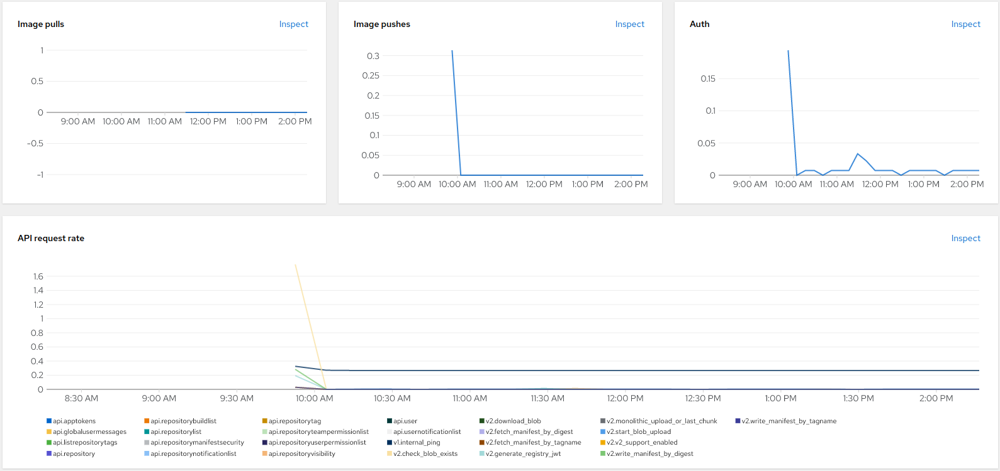

Quay Observability
Red Hat OpenShift provides built-in observability tools for monitoring the health and performance of the system. The Quay Operator adds an embedded Quay Dashboard to the OpenShift console, where we can monitor the health, rates, latency, and more of our Quay registry.
-
Open a web browser and log in to the Red Hat OpenShift Container Platform web console.
-
From the Administrator perspective, click on
Observe, thenDashboards. -
In the
Dashboarddrop-down menu, selectQuay - quay-workshop - registry.

